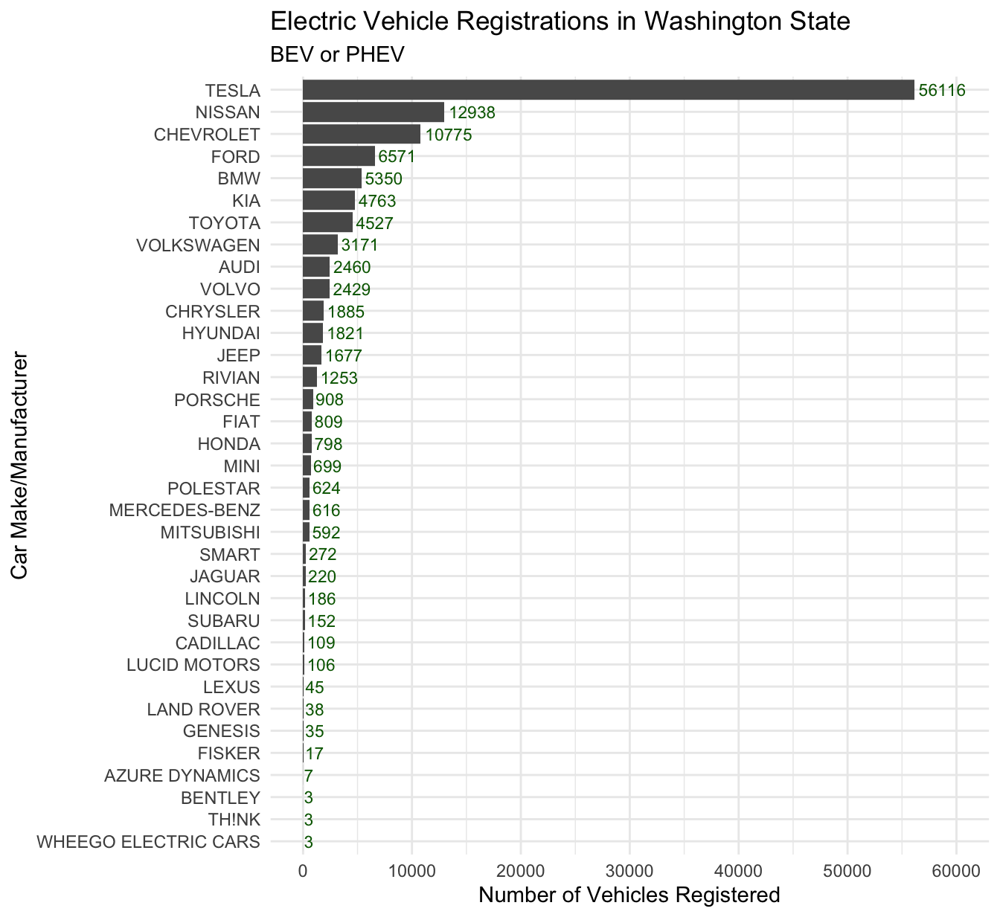
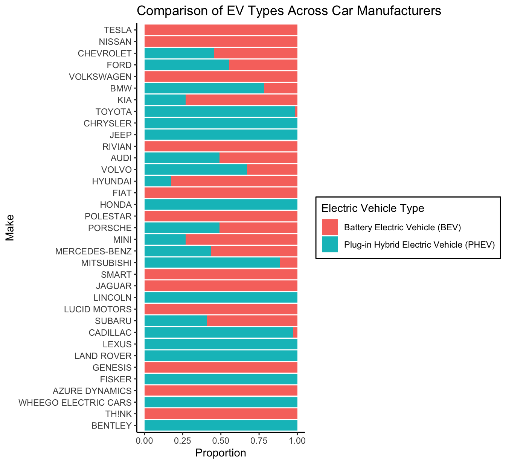
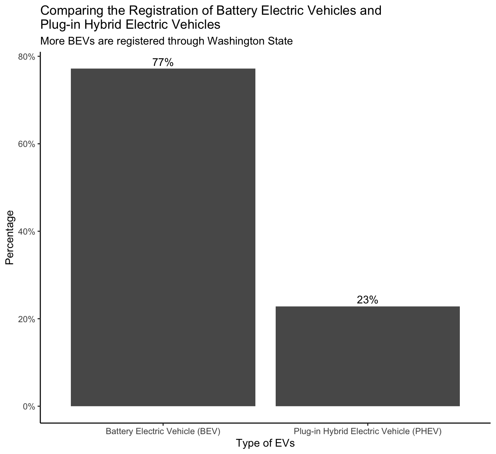
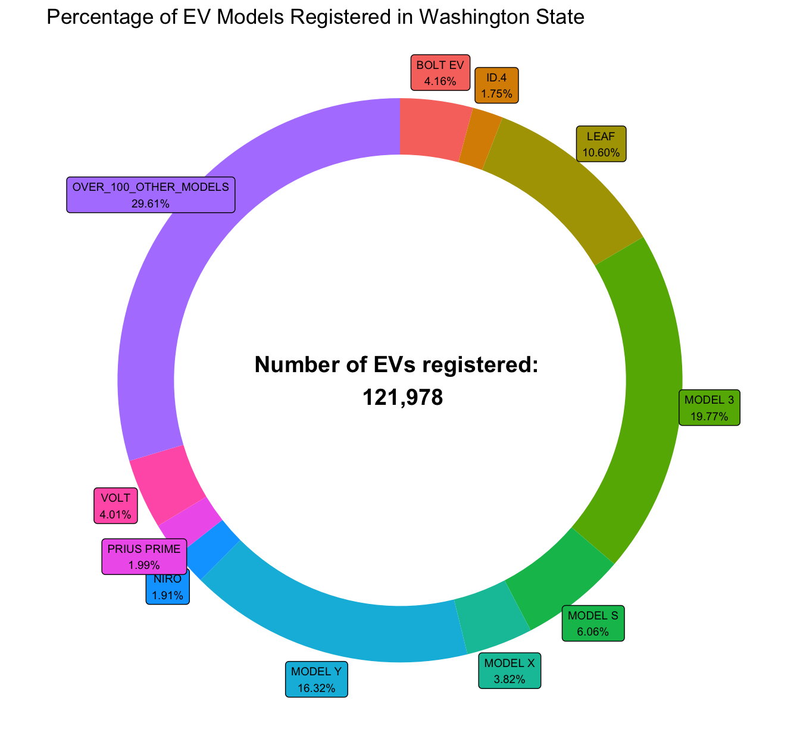

For this analysis we’ll use the data set Electric Vehicles Registered through The State of Washington.
Use glimpse() to view the variable names which are followed by abbreviations of the type of each variable such as <chr> for character (aka strings) and <dbl> is short for double (aka real numbers). Also, it shows the number of observations 121,978 and variables 17.
Use clean_names() from the janitor package, takes the existing column names of your data set, converts them all to lowercase letters and numbers, and separates all words using the underscore character.
Use skim() from the skimr package allows us to get a snapshot of the entire data set, rather than just one variable. This is a great way of getting a quick sense of your data. We see few variables have missing values. Variable electric_utility has the highest missing value at 469, legislative_district has the 2nd highest missing values at 297, and model has the 3rd highest missing values at 104. Also, we can see variable electric_range distribution is skewed to the right. Keep in mind that the data set consist of vehicles that are Battery Electric Vehicle (BEV) and Plug-in Hybrid Electric Vehicle (PHEV). Thus. a reason for a positive skewed(Right-Skewed) distribution is likely due to the low electric range of a PHEV and older BEV vehicles.
Code
skimr::skim(electric_vehicle_population)
Data summary
Name
electric_vehicle_populati…
Number of rows
121978
Number of columns
17
_______________________
Column type frequency:
character
11
numeric
6
________________________
Group variables
None
Variable type: character
skim_variable
n_missing
complete_rate
min
max
empty
n_unique
whitespace
vin_1_10
0
1
10
10
0
8171
0
county
2
1
3
20
0
167
0
city
2
1
3
24
0
647
0
state
0
1
2
2
0
44
0
make
0
1
3
20
0
35
0
model
104
1
2
24
0
119
0
electric_vehicle_type
0
1
30
38
0
2
0
clean_alternative_fuel_vehicle_cafv_eligibility
0
1
37
60
0
3
0
vehicle_location
32
1
23
27
0
768
0
electric_utility
469
1
10
112
0
73
0
x2020_census_tract
2
1
11
11
0
2039
0
Variable type: numeric
skim_variable
n_missing
complete_rate
mean
sd
p0
p25
p50
p75
p100
hist
postal_code
2
1
98159.13
2602.76
1730
98052
98121
98370
99701
▁▁▁▁▇
model_year
0
1
2019.31
2.96
1997
2018
2020
2022
2023
▁▁▁▂▇
electric_range
0
1
81.30
100.89
0
0
25
200
337
▇▂▁▂▁
base_msrp
0
1
1627.06
10267.48
0
0
0
0
845000
▇▁▁▁▁
legislative_district
297
1
29.74
14.74
1
18
34
43
49
▃▂▃▅▇
dol_vehicle_id
0
1
202940879.12
89791382.29
4385
152339745
196753214
225833835
479254772
▁▇▇▁▁
For this EDA we are only interested in the following columns; Select all columns except those from base_msrp to x2020_census_tract (inclusive):
Here we’ll check the number of missing values to see if we need to drop any. We will count the number of missing values in each variable in the data set.
Lets filter to see which observations have missing data in variable model. We see the entries with missing values for models are from the make Volvo and model year is 2023 and their clean_alternative_fuel_vehicle_cafv_eligibility is equal to Eligibility unknown as battery range has not been researched. For the purpose of this EDA we will not drop these missing values. The missing values could potentially be due to the lack of information on the latest EV Volvo model provided when registering the car.
# A tibble: 104 × 11
vin_1_10 county city state posta…¹ model…² make model elect…³ clean…⁴
<chr> <chr> <chr> <chr> <dbl> <dbl> <chr> <chr> <chr> <chr>
1 YV4ED3UM9P Kittitas Ellen… WA 98926 2023 VOLVO <NA> Batter… Eligib…
2 YV4ED3UM0P Snohomish Bothe… WA 98021 2023 VOLVO <NA> Batter… Eligib…
3 YV4ED3UM2P Clark Vanco… WA 98685 2023 VOLVO <NA> Batter… Eligib…
4 YV4ED3ULXP King Seatt… WA 98109 2023 VOLVO <NA> Batter… Eligib…
5 YV4ED3UM1P Pierce South… WA 98373 2023 VOLVO <NA> Batter… Eligib…
6 YV4ED3UM5P King Issaq… WA 98027 2023 VOLVO <NA> Batter… Eligib…
7 YV4ED3UM6P Snohomish Lake … WA 98258 2023 VOLVO <NA> Batter… Eligib…
8 YV4ED3UW5P King Woodi… WA 98072 2023 VOLVO <NA> Batter… Eligib…
9 YV4ED3UW1P King Seatt… WA 98146 2023 VOLVO <NA> Batter… Eligib…
10 YV4ED3UM0P King Vashon WA 98070 2023 VOLVO <NA> Batter… Eligib…
# … with 94 more rows, 1 more variable: electric_range <dbl>, and abbreviated
# variable names ¹postal_code, ²model_year, ³electric_vehicle_type,
# ⁴clean_alternative_fuel_vehicle_cafv_eligibility
Lets filter to see which observations having missing data in variable county. We see both data entries with missing county is also missing city and postal_code. A likely reason for the missing information is those registered cars through the Washington State Department of Licensing (DOL) are now residing outside the country( British Columbia is a province in Canada). For the purpose of the this EDA we will not drop these missing values.
# A tibble: 2 × 11
vin_1…¹ county city state posta…² model…³ make model elect…⁴ clean…⁵ elect…⁶
<chr> <chr> <chr> <chr> <dbl> <dbl> <chr> <chr> <chr> <chr> <dbl>
1 5YJRE1… <NA> <NA> BC NA 2008 TESLA ROAD… Batter… Clean … 220
2 5YJ3E1… <NA> <NA> BC NA 2019 TESLA MODE… Batter… Clean … 220
# … with abbreviated variable names ¹vin_1_10, ²postal_code, ³model_year,
# ⁴electric_vehicle_type, ⁵clean_alternative_fuel_vehicle_cafv_eligibility,
# ⁶electric_range
2 Visualizations
According to data from the Washington State Department of Licensing, Tesla boasts the highest proportion of registered electric vehicles (EVs) among all car companies, with a substantial percentage of 46%. This signifies Tesla’s notable market share and strong presence in the EV sector within Washington State, surpassing other car manufacturers in terms of EV registrations.
The Department of Licensing in Washington State has recorded an impressive number of 56,116 registered electric vehicles (EVs) belonging to Tesla, establishing the brand as the leading entity in terms of EV registrations. Remarkably, Tesla’s registered EV count surpasses that of the second highest make, Nissan, by a significant factor of four, with Nissan having 12,938 registered EVs in the state. This substantial disparity underscores Tesla’s dominance in the EV market within Washington State.
Code
electric_vehicle_population |>ggplot(aes(x =fct_rev(fct_infreq(make)))) +geom_bar() +geom_text(aes(label =after_stat(count)), stat ="count", hjust =-0.1, size =3, colour ="dark green") +coord_flip() +scale_y_continuous(breaks =seq(0, 60000, 10000), limits =c(0, 60000)) +xlab("Car Make/Manufacturer") +ylab("Number of Vehicles Registered") +labs(title ="Electric Vehicle Registrations in Washington State",subtitle ="BEV or PHEV") +theme_minimal()

The dataset indicates that Toyota and Honda, two prominent car brands with a strong market presence in the United States, are lagging behind in terms of registered Battery Electric Vehicles (BEVs) within the state of Washington. This finding highlights a comparative lower adoption rate of BEVs by Toyota and Honda in the region, suggesting a potential area for growth and development in their electric vehicle offerings.
Code
electric_vehicle_population |>group_by(make, electric_vehicle_type) |>summarize(number_of_vehicles_registered =n(), .groups ="drop") |>ggplot(mapping =aes(x =reorder(make,number_of_vehicles_registered), y = number_of_vehicles_registered, fill = electric_vehicle_type)) +geom_bar(stat ="identity", position ="fill") +coord_flip() +labs(title ="Comparison of EV Types Across Car Manufacturers") +ylab("Proportion") +xlab("Make") +theme_classic() +theme(legend.background =element_rect(color ="black")) +guides(fill =guide_legend("Electric Vehicle Type"))

Analysis of the data set obtained from the Washington State Department of Licensing reveals that an impressive majority of 77% of the registered electric vehicles (EVs) within the state fall under the category of Battery Electric Vehicles (BEVs). This finding underscores the significant prevalence and adoption of BEVs among the registered EV population in Washington.
Code
electric_vehicle_population |>group_by(electric_vehicle_type) |>summarize(number_of_vehicles_registered =n()) |>mutate(percentage = (number_of_vehicles_registered/sum(number_of_vehicles_registered))) |>ggplot(mapping =aes(x =reorder(electric_vehicle_type,-percentage), y = percentage)) +geom_bar(stat ="identity") +geom_text(aes(label = scales::percent(round(percentage, digits =4)), vjust =-.4)) +scale_y_continuous(labels = scales::percent) +xlab("Type of EVs") +ylab("Percentage") +labs(title ="Comparing the Registration of Battery Electric Vehicles and\nPlug-in Hybrid Electric Vehicles",subtitle ="More BEVs are registered through Washington State ") +theme_classic() +xlab("Type of EVs") +ylab("Percentage")

Within the records of the Department of Licensing (DOL) in Washington State, it has been observed that Tesla, a prominent electric vehicle (EV) manufacturer, possesses two out of the three highest-ranking EV models in terms of registration. Specifically, the Tesla Model Y and Tesla Model 3 have demonstrated significant presence and popularity among EV owners within the state.
Code
electric_vehicle_population |>group_by(model) |>summarize(number_of_vehicles_registered =n()) |>mutate(proportion = number_of_vehicles_registered/sum(number_of_vehicles_registered)) |>filter(proportion >0.017) |>mutate(ymax =cumsum(proportion)) |>add_row(model ="OVER_100_OTHER_MODELS", number_of_vehicles_registered =36125, proportion = .2961, ymax =1) |>mutate(ymax =cumsum(proportion),ymin =c(0, head(ymax, n=-1)),label_position = (ymax + ymin)/2,labels =paste0(model, "\n", scales::percent(round(proportion, digits =4)))) |>ggplot(aes(ymax = ymax, ymin = ymin, xmax =4, xmin =3, fill = model)) +geom_rect() +geom_label(x =4.5, aes(y = label_position, label = labels), size =2.5) +coord_polar(theta="y") +xlim(c(-1, 4)) +theme_void() +theme(legend.position ="none") +# Add the big number in the center of the holeannotate(geom ="text",label ="Number of EVs registered: \n 121,978",fontface ="bold",size =5,x =-1,y =0) +labs(title ="Percentage of EV Models Registered in Washington State")

3 Shiny App
Developed an innovative Shiny application featuring a dual-tabbed interface, which facilitates the visualization of data through interactive bar charts accompanied by a user-friendly slider bar for efficient filtering by car model year. The application promptly responds to user input, allowing for real-time updates. The initial tab showcases a comprehensive bar chart depicting the distribution of registered electric vehicles (EVs) categorized by car make. The subsequent tab presents an insightful bar chart illustrating the number of EVs registered based on their electric vehicle type, differentiating between Battery Electric Vehicles (BEVs) and Plug-in Hybrid Electric Vehicles (PHEVs).
Since the inception of the model year 2018, Tesla has established itself as the predominant electric vehicle (EV) brand in Washington State, as evidenced by its consistent registration numbers recorded by the Department of Licensing.
The progressive trend observed in vehicle registrations across various model years indicates a notable preference for Battery Electric Vehicles (BEVs) over Plug-In Hybrid Electric Vehicles (PHEVs) in terms of adoption and consumer choice.
Source Code
---title: "EV Project"author: "Cristian Andres"format: html: theme: cerulean code-fold: true code-tools: true toc: true number-sections: trueeditor: visualproject: type: website output-dir: docs---# Data**For this analysis we'll use the data set Electric Vehicles Registered through [The State of Washington.](https://www.kaggle.com/datasets/usamabuttar/electric-vehicle-population-data-washington-us)**```{r}#| include: falselibrary(tidyverse)electric_vehicle_population <-read_csv("Electric_Vehicle_Population_Data.csv")```**Use glimpse() to view the variable names which are followed by abbreviations of the type of each variable such as \<chr\> for character (aka strings) and \<dbl\> is short for double (aka real numbers). Also, it shows the number of observations 121,978 and variables 17.**```{r}glimpse(electric_vehicle_population)```**Use clean_names() from the janitor package, takes the existing column names of your data set, converts them all to lowercase letters and numbers, and separates all words using the underscore character.**```{r}electric_vehicle_population <- electric_vehicle_population |> janitor::clean_names()colnames(electric_vehicle_population)```**Use skim() from the skimr package allows us to get a snapshot of the entire data set, rather than just one variable. This is a great way of getting a quick sense of your data. We see few variables have missing values. Variable electric_utility has the highest missing value at 469, legislative_district has the 2nd highest missing values at 297, and model has the 3rd highest missing values at 104. Also, we can see variable electric_range distribution is skewed to the right. Keep in mind that the data set consist of vehicles that are Battery Electric Vehicle (BEV) and Plug-in Hybrid Electric Vehicle (PHEV). Thus. a reason for a positive skewed(Right-Skewed) distribution is likely due to the low electric range of a PHEV and older BEV vehicles.**```{r}skimr::skim(electric_vehicle_population)```**For this EDA we are only interested in the following columns; Select all columns except those from base_msrp to x2020_census_tract (inclusive):**```{r}electric_vehicle_population <- electric_vehicle_population |>select(!base_msrp:x2020_census_tract)```**Here we'll check the number of missing values to see if we need to drop any. We will count the number of missing values in each variable in the data set.**```{r}electric_vehicle_population |>map(is.na) |>map(sum)```**Lets filter to see which observations have missing data in variable model. We see the entries with missing values for models are from the make Volvo and model year is 2023 and their clean_alternative_fuel_vehicle_cafv_eligibility is equal to Eligibility unknown as battery range has not been researched. For the purpose of this EDA we will not drop these missing values. The missing values could potentially be due to the lack of information on the latest EV Volvo model provided when registering the car.**```{r}electric_vehicle_population |>filter(is.na(model))```**Lets filter to see which observations having missing data in variable county. We see both data entries with missing county is also missing city and postal_code. A likely reason for the missing information is those registered cars through the Washington State Department of Licensing (DOL) are now residing outside the country( British Columbia is a province in Canada). For the purpose of the this EDA we will not drop these missing values.**```{r}electric_vehicle_population |>filter(is.na(county))```# Visualizations**According to data from the Washington State Department of Licensing, Tesla boasts the highest proportion of registered electric vehicles (EVs) among all car companies, with a substantial percentage of 46%. This signifies Tesla's notable market share and strong presence in the EV sector within Washington State, surpassing other car manufacturers in terms of EV registrations.**```{r}#| fig-width: 7#| fig-asp: .918electric_vehicle_population |>group_by(make) |>summarize(number_of_vehicles_registered =n()) |>mutate(percentage = (number_of_vehicles_registered/sum(number_of_vehicles_registered))) |>ggplot(mapping =aes(x = make, y = percentage)) +geom_segment(aes(x =reorder(make,percentage), xend = make, y =0, yend = percentage)) +geom_point( color="blue", size=4, alpha=0.6) +coord_flip() +theme_light() +geom_text(aes(label = scales::percent(round(percentage, digits =5))), hjust =-0.4, size =2.6) +scale_y_continuous(labels = scales::percent, limits =c(0, 0.5)) +xlab("Car Make/Manufacturer") +ylab("Percentage") +labs(title ="Electric Vehicle Registrations in Washington State") +theme(panel.grid.major.y =element_blank(),panel.border =element_blank(),axis.ticks.y =element_blank() )```\**The Department of Licensing in Washington State has recorded an impressive number of 56,116 registered electric vehicles (EVs) belonging to Tesla, establishing the brand as the leading entity in terms of EV registrations. Remarkably, Tesla's registered EV count surpasses that of the second highest make, Nissan, by a significant factor of four, with Nissan having 12,938 registered EVs in the state. This substantial disparity underscores Tesla's dominance in the EV market within Washington State.**```{r}#| fig-width: 7#| fig-asp: .918electric_vehicle_population |>ggplot(aes(x =fct_rev(fct_infreq(make)))) +geom_bar() +geom_text(aes(label =after_stat(count)), stat ="count", hjust =-0.1, size =3, colour ="dark green") +coord_flip() +scale_y_continuous(breaks =seq(0, 60000, 10000), limits =c(0, 60000)) +xlab("Car Make/Manufacturer") +ylab("Number of Vehicles Registered") +labs(title ="Electric Vehicle Registrations in Washington State",subtitle ="BEV or PHEV") +theme_minimal() ```**The dataset indicates that Toyota and Honda, two prominent car brands with a strong market presence in the United States, are lagging behind in terms of registered Battery Electric Vehicles (BEVs) within the state of Washington. This finding highlights a comparative lower adoption rate of BEVs by Toyota and Honda in the region, suggesting a potential area for growth and development in their electric vehicle offerings.**```{r}#| fig-width: 7#| fig-asp: .918electric_vehicle_population |>group_by(make, electric_vehicle_type) |>summarize(number_of_vehicles_registered =n(), .groups ="drop") |>ggplot(mapping =aes(x =reorder(make,number_of_vehicles_registered), y = number_of_vehicles_registered, fill = electric_vehicle_type)) +geom_bar(stat ="identity", position ="fill") +coord_flip() +labs(title ="Comparison of EV Types Across Car Manufacturers") +ylab("Proportion") +xlab("Make") +theme_classic() +theme(legend.background =element_rect(color ="black")) +guides(fill =guide_legend("Electric Vehicle Type"))```**Analysis of the data set obtained from the Washington State Department of Licensing reveals that an impressive majority of 77% of the registered electric vehicles (EVs) within the state fall under the category of Battery Electric Vehicles (BEVs). This finding underscores the significant prevalence and adoption of BEVs among the registered EV population in Washington.**```{r}#| fig-width: 7#| fig-asp: .918electric_vehicle_population |>group_by(electric_vehicle_type) |>summarize(number_of_vehicles_registered =n()) |>mutate(percentage = (number_of_vehicles_registered/sum(number_of_vehicles_registered))) |>ggplot(mapping =aes(x =reorder(electric_vehicle_type,-percentage), y = percentage)) +geom_bar(stat ="identity") +geom_text(aes(label = scales::percent(round(percentage, digits =4)), vjust =-.4)) +scale_y_continuous(labels = scales::percent) +xlab("Type of EVs") +ylab("Percentage") +labs(title ="Comparing the Registration of Battery Electric Vehicles and\nPlug-in Hybrid Electric Vehicles",subtitle ="More BEVs are registered through Washington State ") +theme_classic() +xlab("Type of EVs") +ylab("Percentage") ```**Within the records of the Department of Licensing (DOL) in Washington State, it has been observed that Tesla, a prominent electric vehicle (EV) manufacturer, possesses two out of the three highest-ranking EV models in terms of registration. Specifically, the Tesla Model Y and Tesla Model 3 have demonstrated significant presence and popularity among EV owners within the state.**```{r}#| fig-width: 7#| fig-asp: .918electric_vehicle_population |>group_by(model) |>summarize(number_of_vehicles_registered =n()) |>mutate(proportion = number_of_vehicles_registered/sum(number_of_vehicles_registered)) |>filter(proportion >0.017) |>mutate(ymax =cumsum(proportion)) |>add_row(model ="OVER_100_OTHER_MODELS", number_of_vehicles_registered =36125, proportion = .2961, ymax =1) |>mutate(ymax =cumsum(proportion),ymin =c(0, head(ymax, n=-1)),label_position = (ymax + ymin)/2,labels =paste0(model, "\n", scales::percent(round(proportion, digits =4)))) |>ggplot(aes(ymax = ymax, ymin = ymin, xmax =4, xmin =3, fill = model)) +geom_rect() +geom_label(x =4.5, aes(y = label_position, label = labels), size =2.5) +coord_polar(theta="y") +xlim(c(-1, 4)) +theme_void() +theme(legend.position ="none") +# Add the big number in the center of the holeannotate(geom ="text",label ="Number of EVs registered: \n 121,978",fontface ="bold",size =5,x =-1,y =0) +labs(title ="Percentage of EV Models Registered in Washington State")```# Shiny App**Developed an innovative Shiny application featuring a dual-tabbed interface, which facilitates the visualization of data through interactive bar charts accompanied by a user-friendly slider bar for efficient filtering by car model year. The application promptly responds to user input, allowing for real-time updates. The initial tab showcases a comprehensive bar chart depicting the distribution of registered electric vehicles (EVs) categorized by car make. The subsequent tab presents an insightful bar chart illustrating the number of EVs registered based on their electric vehicle type, differentiating between Battery Electric Vehicles (BEVs) and Plug-in Hybrid Electric Vehicles (PHEVs).**[EVs Registered in the State of Washington](https://leonel1007.shinyapps.io/EVproject/)**Since the inception of the model year 2018, Tesla has established itself as the predominant electric vehicle (EV) brand in Washington State, as evidenced by its consistent registration numbers recorded by the Department of Licensing.\****The progressive trend observed in vehicle registrations across various model years indicates a notable preference for Battery Electric Vehicles (BEVs) over Plug-In Hybrid Electric Vehicles (PHEVs) in terms of adoption and consumer choice.**